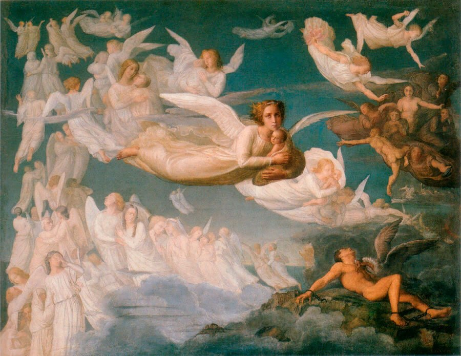
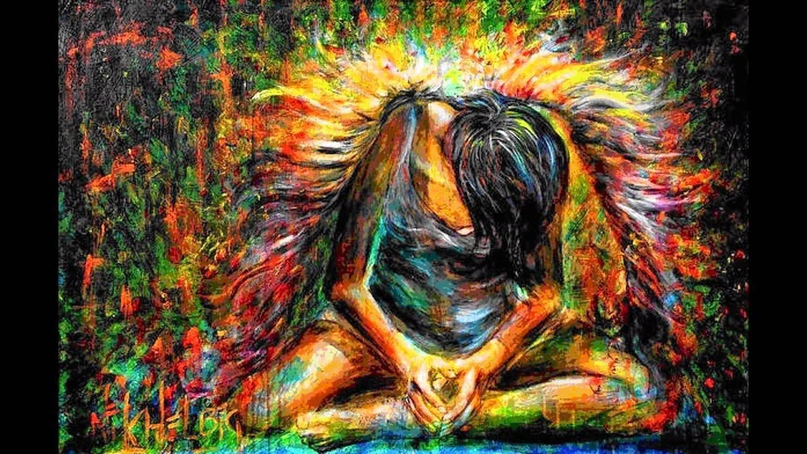
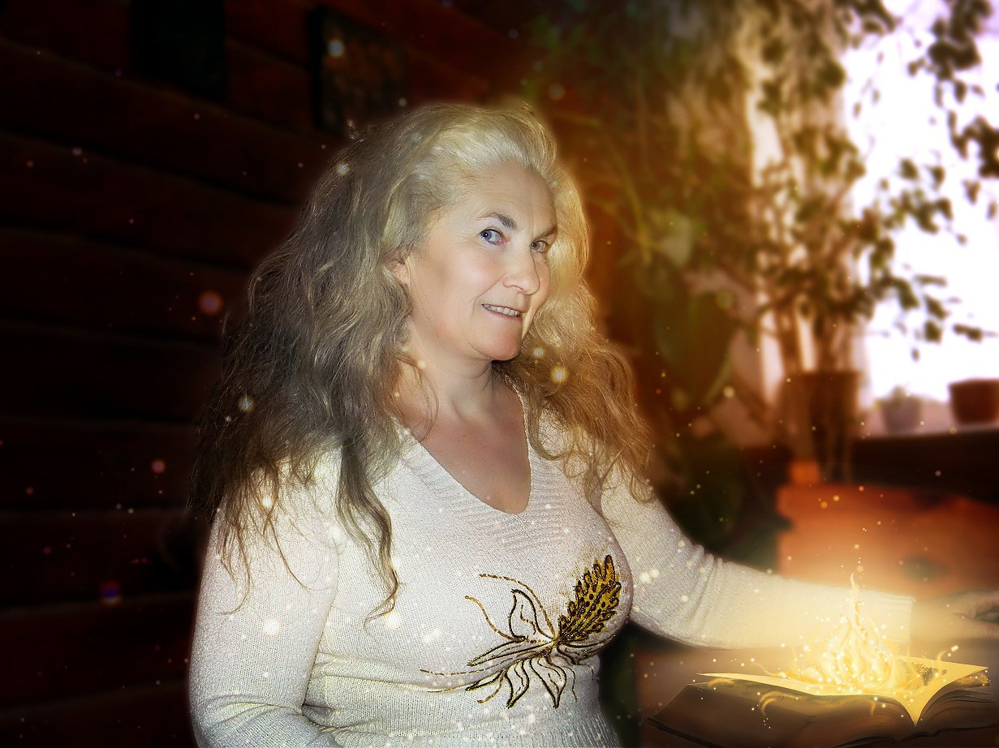

«Поэма о душе» Луи Жанмо
Есть в нашей огромной Вселенной чудная голубая планета. Обитатели называют ее Землей. А вечные души называют ее «школой».
Выбирая свое очередное воплощение в человеческом теле на этой планете, души выбирают и получение определенного духовного опыта. Такого, который повысит уровень их вибраций. Речь идет о самой привлекательной особенности жителей Земли – умении чувствовать. Именно чувства позволяют душе повышать свой вибрационный уровень. Ведь чем он выше, тем ближе душа к совершенству, тем более подобна она своему Создателю. И это ее основная цель.
Человек – это не только физическая оболочка, например, Машеньки, Ольги или Игоря. Человек – это всегда душа, которая стремится к развитию духовности. Реинкарнируя, она сама формулирует условия и цели желаемого опыта и, придя на Землю, получает его через события обычной физической жизни. Знания приходят ей из взаимодействия с социумом, семьей, коллегами, подругами и друзьями, и конечно, с любимыми.
Наше сознание порой не позволяет нам увидеть в «уроках земной школы» замысел Уроков Всевышнего. Это происходит потому, что для точности эксперимента душа забывает на время пребывания на планете свои предыдущие воплощения и достижения. Она обнуляет свою земную память для полноты восприятия.
Так, начиная путь в этой совсем непростой реальности, маленький ребенок, взрослея, все яснее ощущает на себе разнообразие и сложность жизненных ситуаций. При этом он не всегда понимает, что каждая сложная ситуация – это урок. И зависимость – один из них.
Жена и близкие зависимого, а случается и они сами, воспринимают свою проблему как испытание. Они вопрошают Создателя: «За что?», хотя правильнее было бы задать вопрос: «Зачем?».
Как и малыш, который падая и поднимаясь, учится ходить, душе нравится эволюционировать на новый уровень восприятия, проваливаясь в бессилие духовного падения и вновь обретая гармонию эмоционального баланса. Это и является ответом на вопрос «зачем».
Пройти этот опыт с позитивным результатом человек может только через чувства.

Следует понимать, что для прохождения этого урока существуют два пути: страдания и Любви.
Путь Любви. Любовь – основа всех позитивных изменений. Я открываю для тех, кто обратился ко мне за помощью, именно этот путь и помогаю обратившимся держаться данного направления.
Путь страданий – это озлобление, агрессия, закрытие себя в эмоциональный лед. Человек, таким образом, пытаясь уйти от разочарований и боли, боится чувствовать. Он обороняется цинизмом, порой отшучивается, избегает общения и однажды превращается в бесчувственного «зомби», который все больше увязает в зыбучих песках собственных страданий. В итоге душа возвращается на Землю вновь с тем же намерением – найти нужные решения той же самой задачи.
Сложность урока зависимости заключается в принятии и осмыслении любого опыта, который способствует духовному росту. Даже если это тяжелый случай.
Невольно возникает вопрос: «Зачем душам нужен такой негативный опыт?»
Дело в том, что душа стремится к целостности. А эту целостность она получает только в процессе проживания не только позитивного, но и негативного телесного опыта.
Ощущения любых перипетий человеческих будней дают душе желаемые ощущения, опыт всего спектра чувствительности, доступного человеку. Вот тогда она и становится целой, не разбитой на осколки отдельных восприятий и необъективных выводов.
Испытания будут продолжаться до тех пор, пока Урок не будет пройден.
Как это будет понятно? Зависимость или другая угнетающая ситуация окажется побежденной. Как этого достичь максимально быстро? Я расскажу…
Рассмотрим пример, где женщина – жертва насилия. Прошло время. Жизнь идет своим чередом. Защитные механизмы психики надежно сработали – боль ушла. Вспоминать это событие она не хочет. Стерто и забыто. Но почему-то у нее не складывается личная жизнь. К ней притягиваются только мужчины – тираны. И у нее остается не такой уж большой выбор сценариев отношений. Либо она останется одна, либо боль воспоминаний будет прорываться сквозь защитные барьеры, либо она смириться с насилием и «объяснит» себе, что проблема в ней самой и что виновата она сама. То есть войдет в образ жертвы окончательно.
Почему? Потому что страшный эпизод не прожит. Он загнан в самые дальние уголки подсознания, но влияние его остается. Мало того, что оно не становится слабее, с годами оно только усиливается.
Проживание чувств необходимо делать после подготовки, которая у меня проходит на ступени Прощение. Психофизиологический эффект прощения – это ментальное обновление, эмоциональное облегчение и улучшение физических показателей здоровья. Говоря проще, мозг привыкает, что прощение любой обиды приводит к радости и легкости. И вот теперь защитные механизмы ослабевают. И мы можем потихоньку, не торопясь идти вглубь подсознания.
Человек, освоивший много психологических практик на моем курсе, уже умеет позитивно направлять свои мысли. Этот эффект мотивирует бывшую «жертву» снова поверить в себя, и тогда работа с глубинными чувствами, испытанными в страшном эпизоде, уже не пугает. Мало этого, она превращается в веселую игру.
Знай – ты рождена, чтобы стать счастливой.
Пойми, что ты уникальна.
Поверь – страдания закончены.
Приходи, я знаю, как тебе помочь.

Твой проводник в Любовь Тамара Шомина
03.03.2024